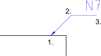

เส้นนำ
แถบเครื่องมือ / ไอคอน:


เมนู: มิติ > เส้นนำ
ทางลัด: D, E | L, D
คำสั่ง: leader | dimlea | de | ld
แถบเครื่องมือ / ไอคอน:


เมนู: มิติ > เส้นนำ
ทางลัด: D, E | L, D
คำสั่ง: leader | dimlea | de | ld
เส้นชี้คือลูกศรที่มักชี้จากเอนทิตีข้อความไปยังเอนทิตีอื่นดังที่แสดงด้านล่าง ในตัวอย่างนี้ เอนทิตีข้อความ „N7" กำลังอธิบายคุณสมบัติพื้นผิวโดยการชี้ไปที่มันด้วยเส้นชี้
